images/ ที่วางไว้ข้างๆ ไฟล์ HTML นี้ (โครงสร้าง: tps-office-user-guide.html + images/01-login-landing.jpg ฯลฯ)
แค่ตั้งชื่อไฟล์ภาพให้ตรงกับที่ระบุใต้แต่ละกรอบ (ดูกรอบเทาลายทแยงที่มีชื่อไฟล์กำกับไว้) แล้ว save ภาพจากที่คุยกันไว้ลงไป ระบบจะแสดงภาพแทนที่กรอบลายทแยงให้เองทันทีที่เปิดไฟล์ ไม่ต้องแก้โค้ด
1ภาพรวมระบบ
TPS Office Digital Tools คือระบบกลางสำหรับติดตามความคืบหน้าโครงการ Digital Transformation ของกลุ่ม ATTG ตามแผน FY'2026–2028
🗂️ Project Registration
ลงทะเบียนและติดตามโครงการที่ลดเวลาทำงานหรือลดการใช้กระดาษ
🎓 Citizen Developer Training
บันทึกการอบรม Power Platform 3 ระดับ ตามรอบและไตรมาส
🏆 Power Champion
ทะเบียนบุคลากรที่เป็นกำลังสำคัญด้าน Automation ของแต่ละบริษัท
ข้อมูลทั้งหมดเชื่อมกับ Dashboard แบบเรียลไทม์ — ไม่ต้องรอสรุปรายเดือน เห็นความคืบหน้าได้ทันทีที่มีการอัปเดต ระบบมี 2 มุมมองสำหรับติดตามภาพรวม: Section Dashboard (หัวหน้าแผนก) และ Executive Dashboard (ผู้บริหาร)
2การเข้าสู่ระบบ
ระบบใช้บัญชี Microsoft 365 (O365) ของบริษัทในการยืนยันตัวตน ผ่าน Single Sign-On เดียวกับที่ใช้ล็อกอิน Outlook/Teams ทุกวัน ไม่มีรหัสผ่านชุดที่สองให้จำเพิ่ม
- เข้าเว็บไซต์
https://tpsit.attg.co.thจะเห็นหน้าแนะนำระบบพร้อมปุ่ม "ลงชื่อเข้าใช้ด้วย Microsoft 365" - กดปุ่มแล้วเลือกบัญชี O365 ของบริษัท (เช่น
0158-ATA@ap01.aisingroup.com) จากหน้า "Pick an account" - ระบบอาจพาไปหน้า Login ของ AISIN (SSO) ให้กรอก Username/Password บัญชีเดิมที่ใช้ล็อกอินเครื่องทุกวัน
- เมื่อยืนยันตัวตนสำเร็จ ระบบจะพาเข้าหน้าหลักอัตโนมัติ — สิทธิ์การใช้งานจะถูกกำหนดตามอีเมลที่ login โดยอัตโนมัติ
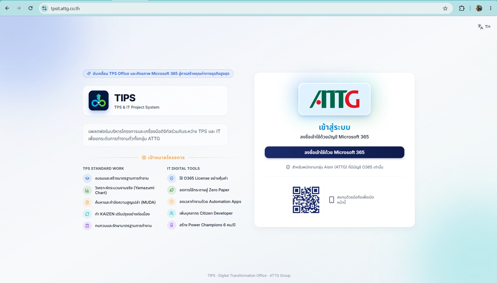
images/01-login-landing.jpg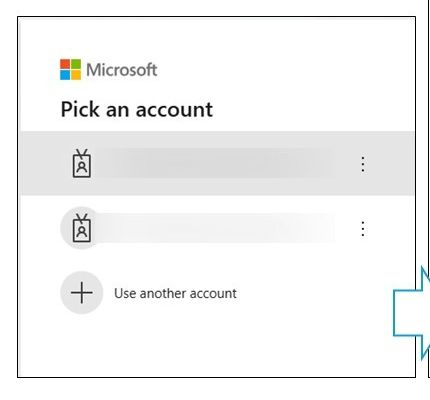
images/02-login-account-picker.jpg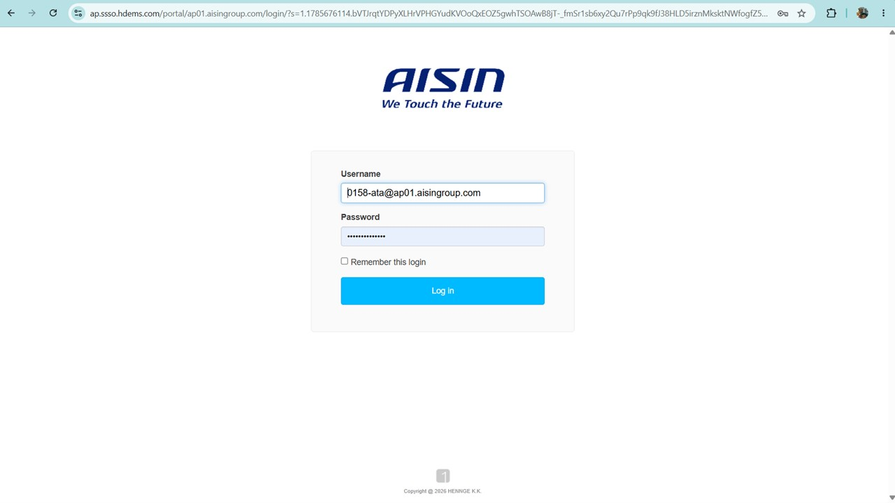
images/03-login-aisin-sso.jpg3หน้าหลัก (Landing)
หน้าแรกหลังล็อกอิน แสดงมูลค่าที่ระบบสร้างคืนให้ธุรกิจ (สะสมถึงปัจจุบัน) พร้อมทางเข้าสู่ 3 ส่วนหลัก
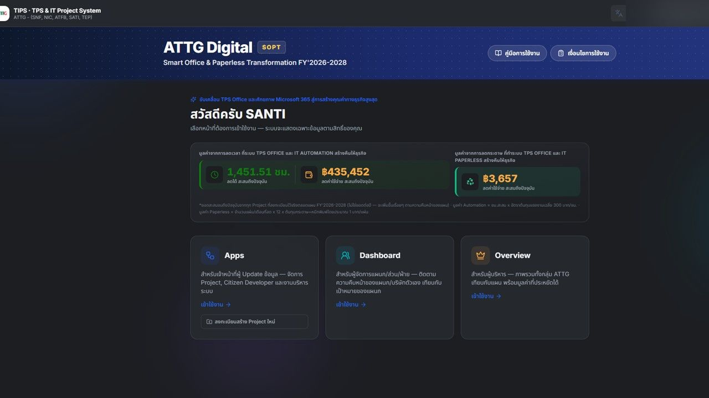
images/04-landing-home.jpgApps
สำหรับเจ้าหน้าที่ผู้ Update ข้อมูล — จัดการ Project, Citizen Developer และงานบริหารระบบ (มีทางลัด "ลงทะเบียนสร้าง Project ใหม่")
Dashboard
สำหรับหัวหน้าแผนก — ติดตามความคืบหน้าของแผนก/บริษัทตัวเอง (ดูหมวด 8. Section Dashboard)
Overview
สำหรับผู้บริหาร — ภาพรวมทั้งกลุ่ม ATTG พร้อมมูลค่าที่ประหยัดได้ (ดูหมวด 9. Executive Dashboard)
4Dashboard & KPI (ฝั่ง Apps)
หน้าแรกของฝั่ง "Apps" (เมนูซ้าย) — สรุปภาพรวมและตัวชี้วัดเชิงกลยุทธ์ 3 ปีในที่เดียว ก่อนเข้าไปจัดการข้อมูลรายหน้า
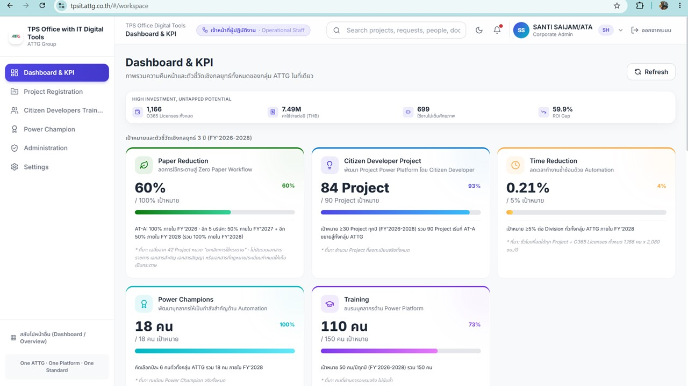
images/05-dashboard-kpi.jpg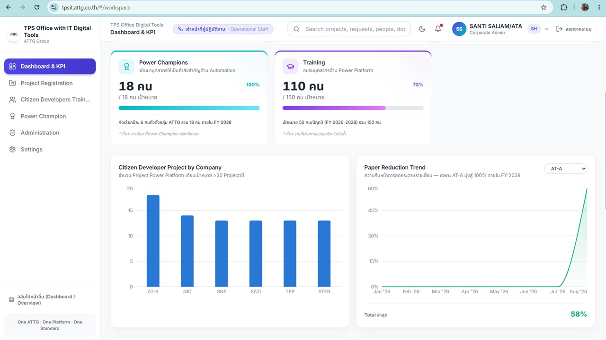
images/06-dashboard-charts.jpg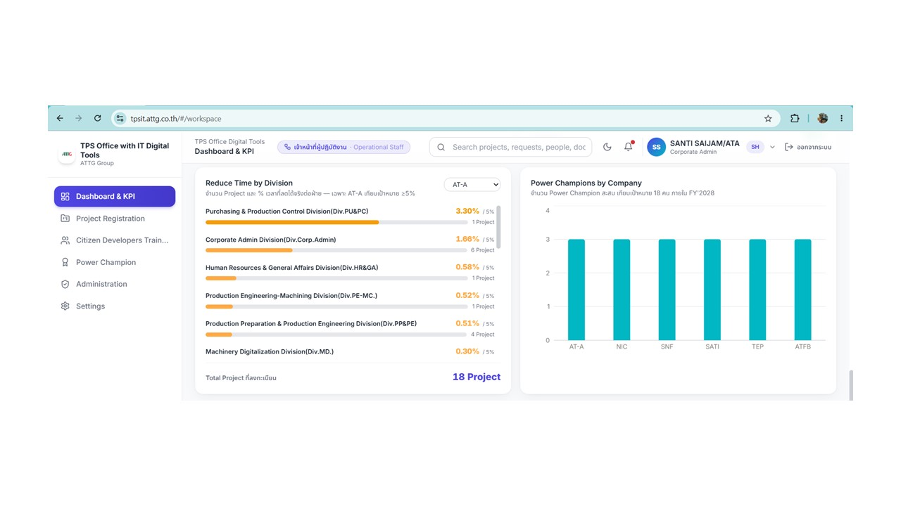
images/07-dashboard-division-champions.jpg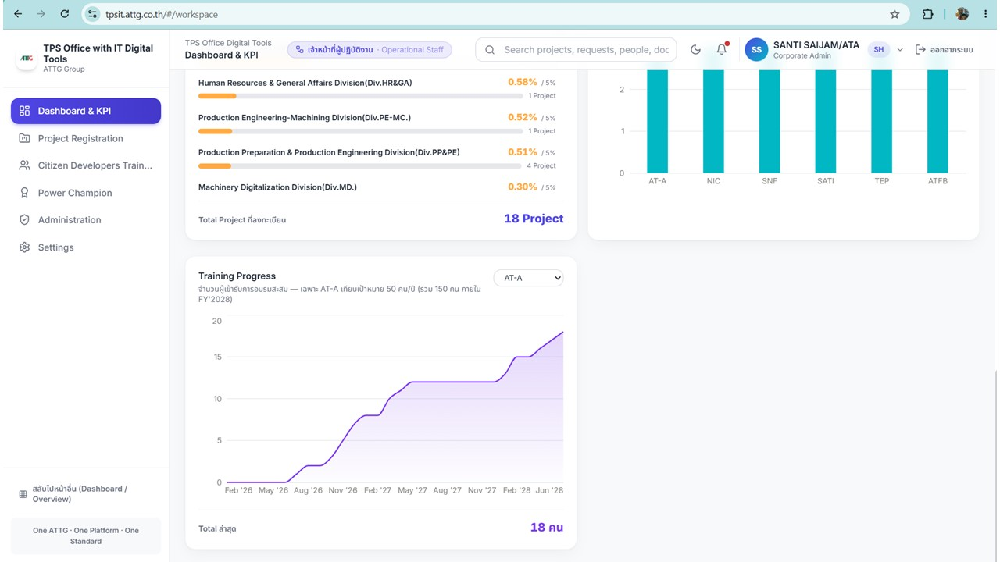
images/08-dashboard-training-trend.jpg5Project Registration
ใช้ลงทะเบียนโครงการ Automation ที่ลดเวลาทำงานหรือลดการใช้กระดาษ — มีตัวกรองบริษัท/แผนก/สถานะ/หมวดหมู่ และช่องค้นหา
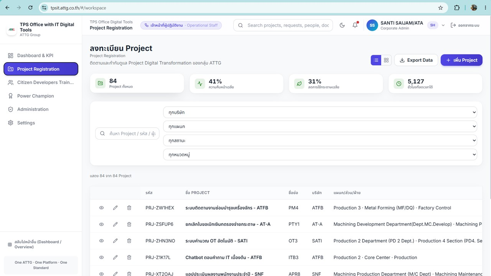
images/09-projects-list.jpg5.1 ลงทะเบียน Project ใหม่
- กดปุ่ม "+ เพิ่ม Project" มุมขวาบน
- กรอกส่วน "ข้อมูลโครงการ": ชื่อ Project, ชื่อย่อ, บริษัท, หมวดหมู่ (ลดเวลา/ลดกระดาษ), แผนก/ส่วน/ฝ่าย, และเลือกว่าต้องการใช้ฐานข้อมูล SharePoint List ส่วนกลางหรือไม่
- ส่วน "ผู้เกี่ยวข้อง" — ผู้จัดสร้าง (เติมชื่อผู้ล็อกอินอัตโนมัติ) และผู้อนุมัติระดับ Section/Department
- ส่วน "สถานะและกำหนดการ" — สถานะ, % ความคืบหน้า, วันเริ่มต้น/สิ้นสุดโครงการ
- ส่วน "ผลลัพธ์และเครื่องมือ" — กรอกเฉพาะฟิลด์ที่ตรงกับหมวดหมู่ที่เลือก (ชั่วโมงที่ลดได้ หรือ % กระดาษที่ลด + จำนวนแผ่น/เดือน) และระบุเครื่องมือ Power Platform/AI ที่ใช้พัฒนา
- กด "สร้าง Project"
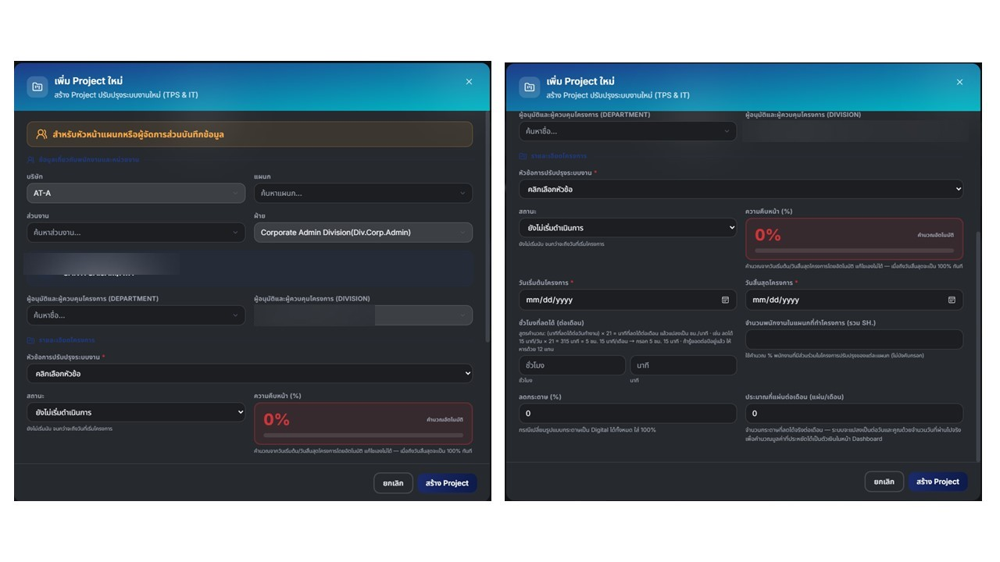
images/11-projects-add-form-1.jpg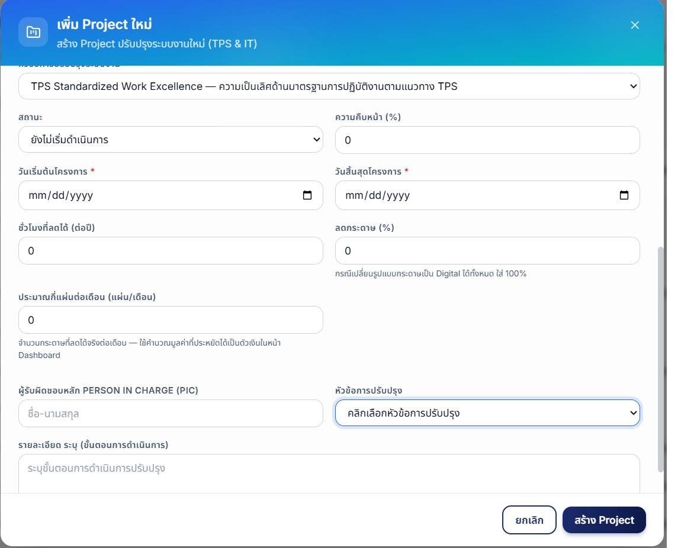
images/12-projects-add-form-2.jpg5.2 Export ข้อมูลเป็น Excel
กดปุ่ม "Export Data" มุมขวาบนของหน้า — ระบบจะดาวน์โหลดไฟล์ .xlsx ของข้อมูล Project ทั้งหมดตามตัวกรองที่เลือกอยู่ (ตั้งชื่อไฟล์อัตโนมัติตามวันที่ เช่น TPS_Projects_2026-08-02.xlsx)
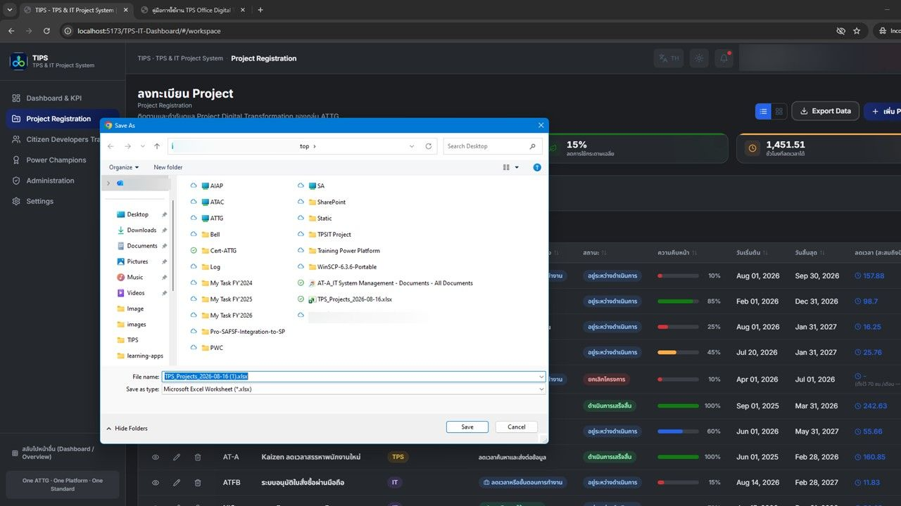
images/10-projects-export-dialog.jpgปุ่มนี้ใช้งานได้เฉพาะบางบัญชีเท่านั้น (ดูรายชื่อในหมวด สรุปสิทธิ์การใช้งาน) — ผู้ใช้อื่นจะเห็นปุ่มเป็นสีเทา กดไม่ได้
6Citizen Developer Training
บันทึกประวัติการอบรม Power Platform ของพนักงานทั้ง 6 บริษัทในกลุ่ม
| ระดับ | หลักสูตร | จำนวนรอบ |
|---|---|---|
| L1 · Beginner | Smart Paperless Process Builder | 4 รอบ (Q3'26 – Q1-Q2'28) |
| L2 · Intermediate | Business Automation App Builder | 3 รอบ (Q4'26 – Q1-Q2'28) |
| L3 · Advanced | AI-Assisted Web Application Development | 2 รอบ (Q1-Q2'27 – Q1-Q2'28) |
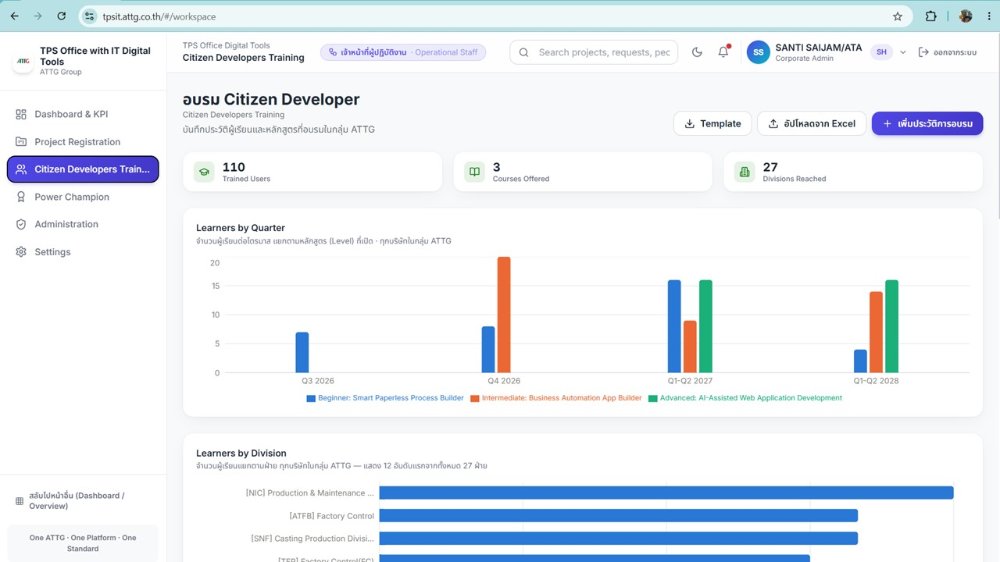
images/13-training-list.jpg6.1 เพิ่มประวัติการอบรม
- กดปุ่ม "+ เพิ่มประวัติการอบรม"
- เลือกบริษัทก่อน — ระบบจะกรองรายชื่อพนักงาน/แผนก/ส่วน/ฝ่าย ให้ตรงกับบริษัทนั้นโดยอัตโนมัติ (ข้อมูลมาจาก SharePoint Employee list จริง)
- เลือกชื่อ Course แล้วเลือก "รอบที่" — ตัวเลือกรอบจะเปลี่ยนตามหลักสูตรที่เลือก (แต่ละหลักสูตรมีจำนวนรอบไม่เท่ากัน)
- ระบบจะโชว์กล่องรายละเอียดหลักสูตร (ระดับ, เครื่องมือหลัก, เป้าหมาย, คุณสมบัติผู้เข้าอบรม) ให้ตรวจสอบก่อนกรอกต่อ
- กรอกวันที่เริ่ม/ถึงวันที่, เวลาเริ่ม/สิ้นสุด, ประเภท+ชื่อวิทยากร, ชื่อสถาบัน, รูปแบบการอบรม/สถานที่, ระยะเวลา
- กด "บันทึก" — ระบบจะเคลียร์เฉพาะข้อมูลตัวบุคคล (รหัสพนักงาน, ชื่อ) ส่วนข้อมูลรอบ/หลักสูตร/วิทยากรจะคงไว้ ช่วยคีย์คนถัดไปในคอร์สเดียวกันได้เร็วขึ้น
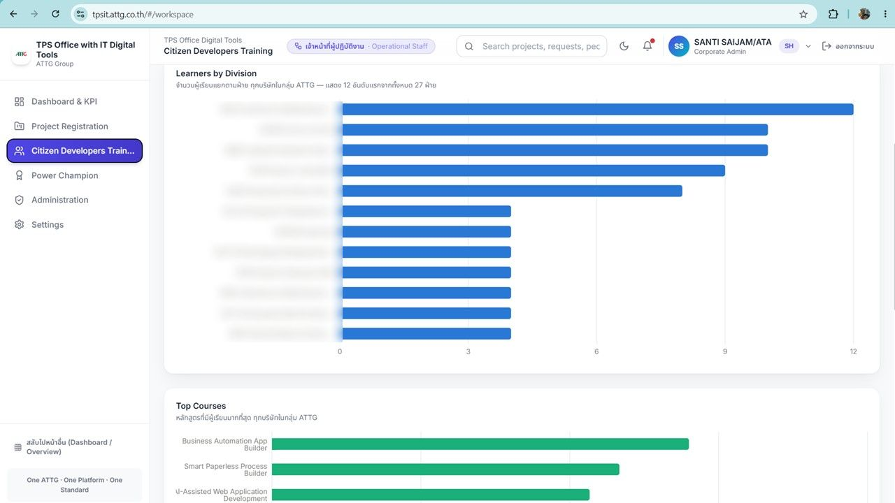
images/14-training-learners-by-division.jpg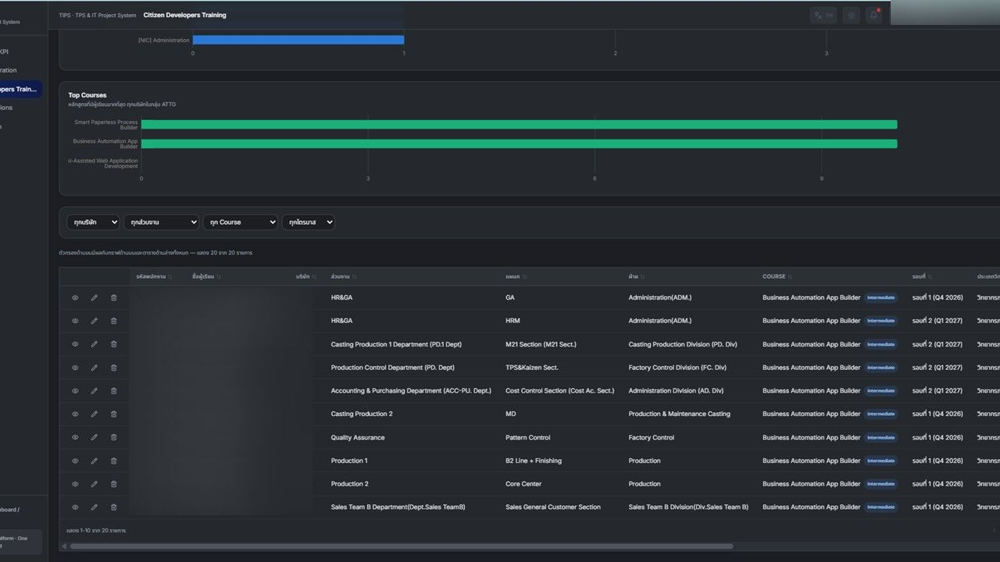
images/15-training-table.jpg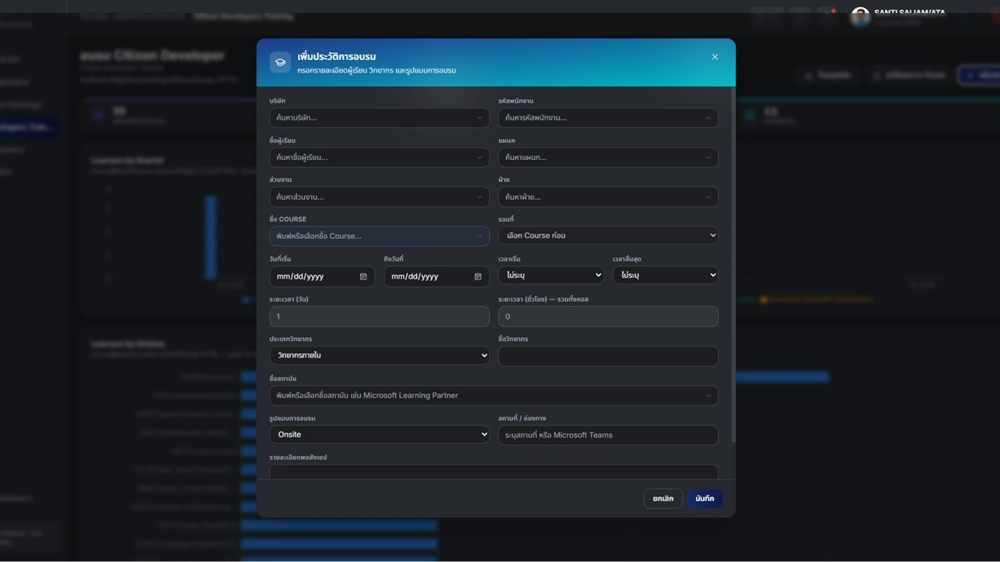
images/training-add-form-1.jpg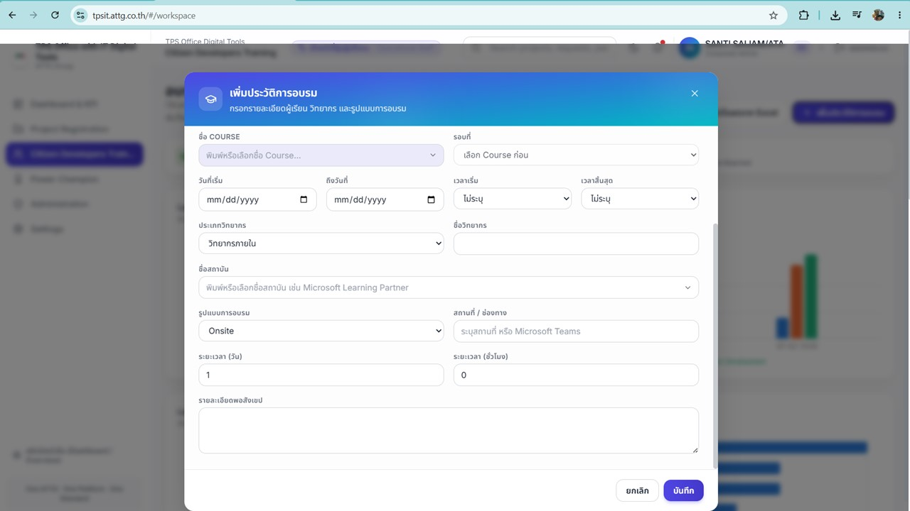
images/training-add-form-2.jpg6.2 นำเข้าจาก Excel
สำหรับกรอกทีละหลายรายการ กดปุ่ม "Template" เพื่อดาวน์โหลดไฟล์ตัวอย่างก่อน กรอกข้อมูลตามคอลัมน์ในไฟล์ แล้วกด "อัปโหลดจาก Excel" เพื่อเลือกไฟล์ .xlsx/.xls นำเข้าทีเดียว
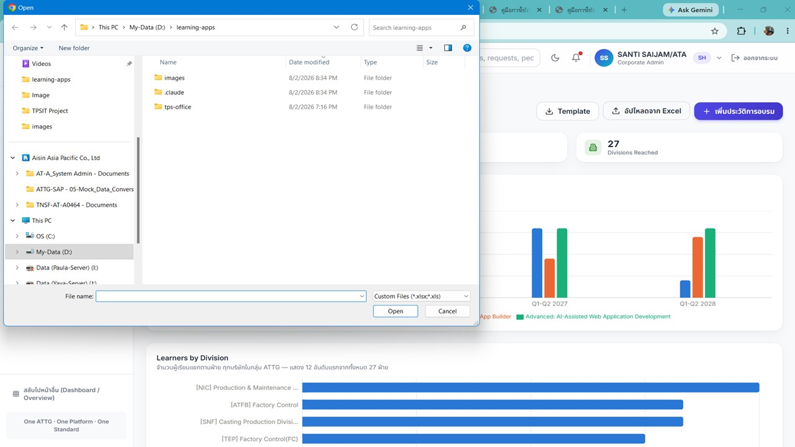
images/training-excel-upload-dialog.jpg7Power Champion
ทะเบียนบุคลากรที่ได้รับการแต่งตั้งเป็น Power Champion ของแต่ละบริษัท — เป้าหมาย 6 คน/บริษัท/ปี รวม 18 คนภายใน FY'2028
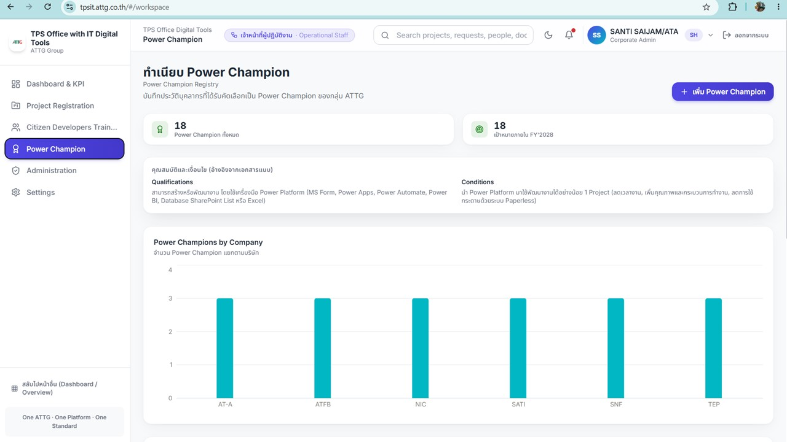
images/16-champions-list-top.jpg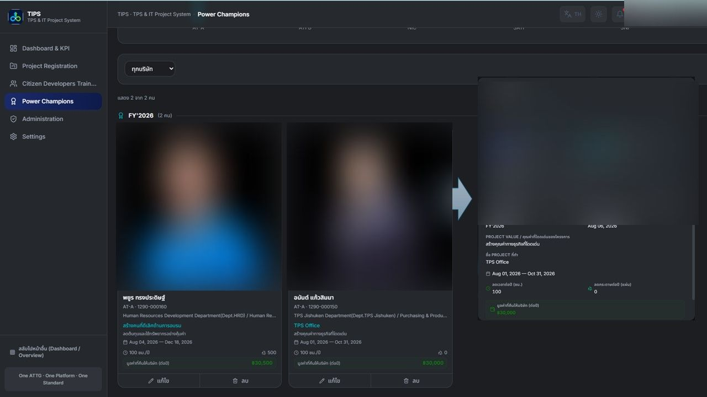
images/17-champions-list-table.jpgคุณสมบัติและเงื่อนไข
- Qualifications: สามารถสร้างหรือพัฒนางานโดยใช้เครื่องมือ Power Platform (MS Forms, Power Apps, Power Automate, Power BI, Database SharePoint List หรือ Excel)
- Conditions: นำ Power Platform มาใช้พัฒนางานได้อย่างน้อย 1 Project (ลดเวลางาน, เพิ่มคุณภาพและกระบวนการทำงาน, ลดการใช้กระดาษด้วยระบบ Paperless)
- กดปุ่ม "+ เพิ่ม Power Champion"
- กรอกบริษัท/รหัสพนักงาน/ชื่อ/แผนก/ส่วน/ฝ่าย (กรองตามบริษัทเหมือนหน้า Training)
- เลือก Project Value (คุณค่าที่โดดเด่นของโครงการ), ผู้อนุมัติ, ปีที่ได้รับตำแหน่ง (FY)
- กรอกวันที่ได้รับคัดเลือก และรายละเอียดโดยสังเขป แล้วกดบันทึก
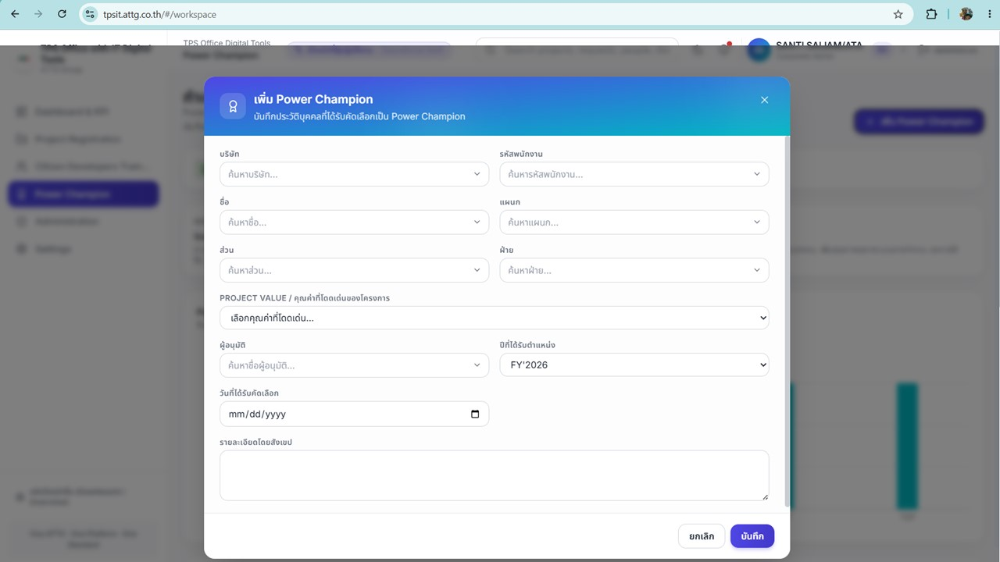
images/18-champions-add-form.jpg8Section Dashboard
มุมมองสำหรับหัวหน้าแผนก (Section Manager) — ติดตามความคืบหน้าเทียบเป้าหมาย เลือกดูเฉพาะบริษัท/ฝ่ายของตัวเอง หรือทั้งกลุ่มก็ได้
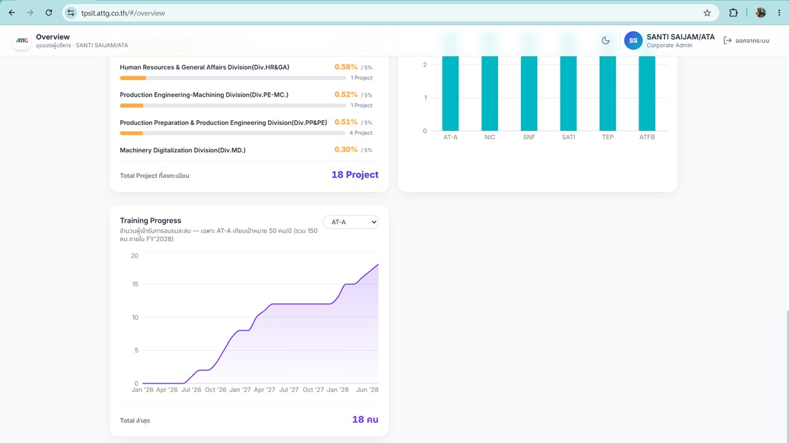
images/22-section-dashboard.jpg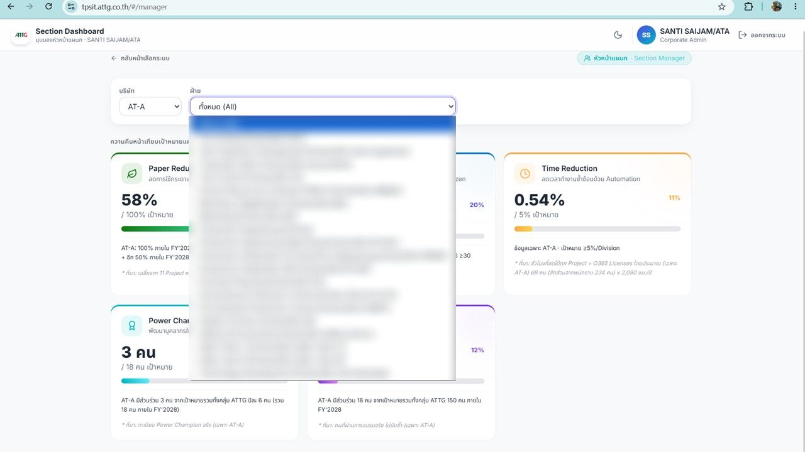
images/23-section-dashboard-division-filter.jpgตัวกรองบริษัท / ฝ่าย
เลือก "ทั้งหมด (All)" เพื่อดูภาพรวมบริษัท หรือเลือกฝ่ายเฉพาะเจาะจง — รายชื่อฝ่ายเป็นข้อมูลจริงจาก SharePoint ของบริษัทนั้นๆ
5 ตัวชี้วัดหลัก
Paper Reduction · Citizen Developer Project · Time Reduction · Power Champions · Training — แต่ละการ์ดมีบรรทัดที่มา (footnote) อธิบายวิธีคำนวณกำกับไว้
9Executive Dashboard
ภาพรวมระดับผู้บริหาร ครอบคลุมทั้งกลุ่ม ATTG พร้อมมูลค่าที่ระบบสร้างคืนให้ธุรกิจ
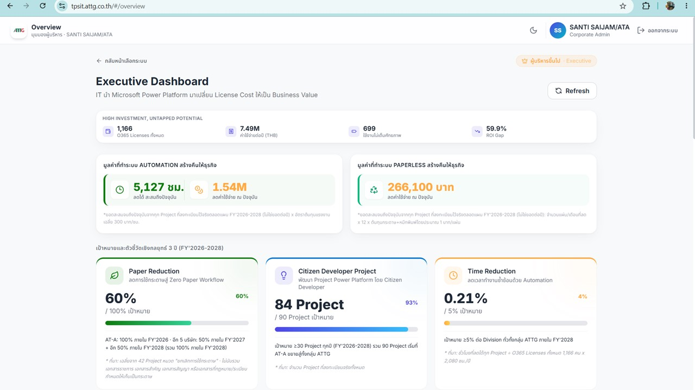
images/24-executive-overview-top.jpg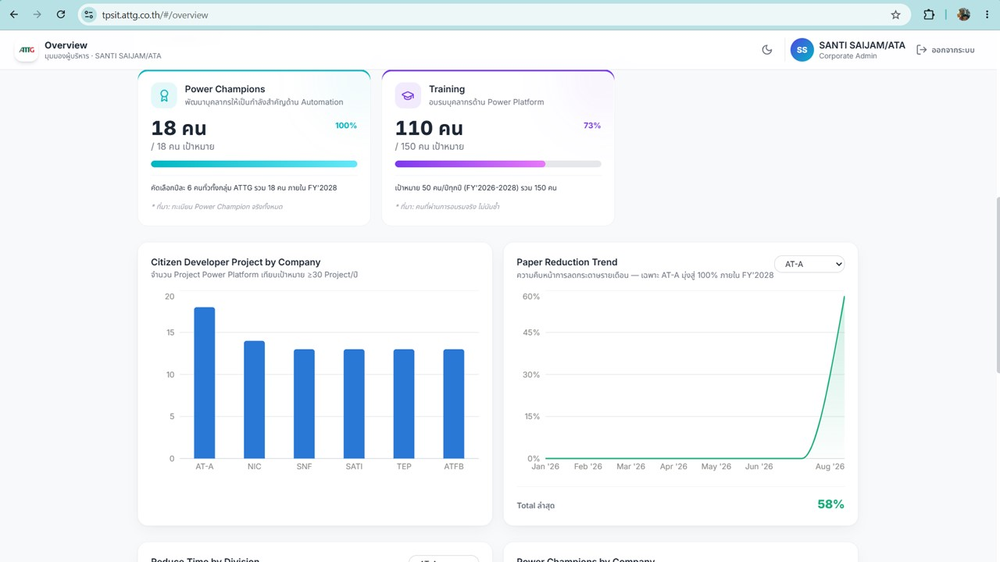
images/25-executive-overview-champions-training-charts.jpg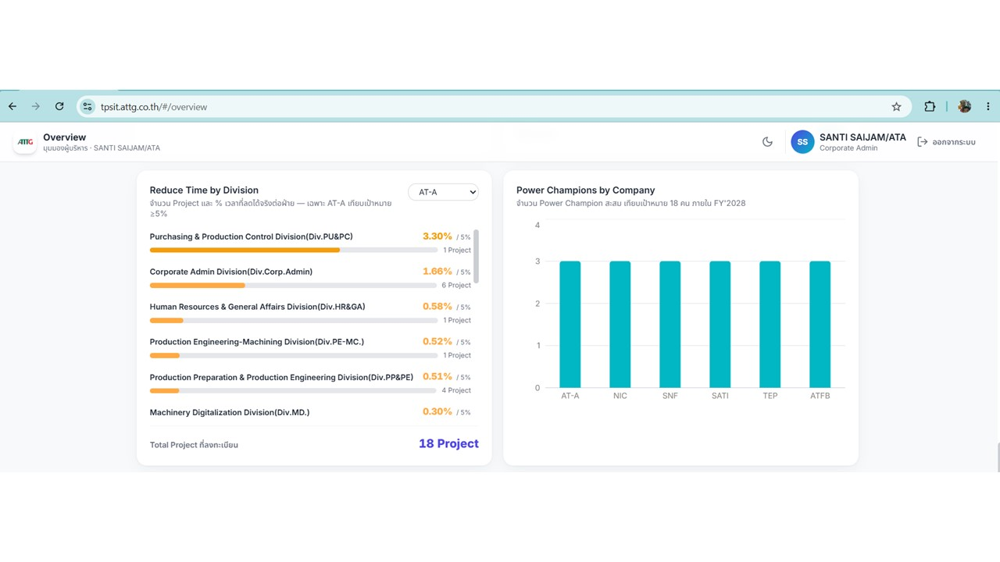
images/26-executive-overview-division-champions.jpg
images/27-executive-overview-training-progress.jpg- สถิติ O365 License: จำนวนรวม, ค่าใช้จ่ายต่อปี, สัดส่วนที่ยังใช้งานไม่เต็มศักยภาพ, ROI Gap
- มูลค่าที่ทำระบบ Automation / Paperless สร้างคืนให้ธุรกิจ (สะสมถึงปัจจุบัน — ไม่ใช่ยอดต่อปี)
- กราฟเปรียบเทียบแต่ละบริษัท: จำนวน Project, Power Champions
- Reduce Time by Division — เลือกบริษัทได้ ไล่เฉดสีตามความคืบหน้า (แดง = ยังไม่เริ่ม, ส้ม/เหลือง = กำลังไป, เขียว = ถึงเป้าหมาย)
- สามารถกด Refresh มุมขวาบนเพื่อดึงข้อมูลล่าสุดได้ตลอดเวลา
10Administration
เฉพาะบัญชีที่มีสิทธิ์ Admin เท่านั้นที่เปิดเมนูนี้ได้
Manage Data
ทางลัดไปหน้าจัดการ Project / Training / Power Champion
Access & Permissions
รายชื่อบัญชีที่มีสิทธิ์ Admin / Export / เข้าเมนูจำกัด (ข้อมูลจริง อัปเดตอัตโนมัติ)
Database
สถานะฐานข้อมูลแบบเรียลไทม์ และรายชื่อตารางพร้อมจำนวนแถวจริง
Estimated Monthly Cost
ประมาณการค่าใช้จ่ายระบบ ณ ปัจจุบัน เทียบกับทางเลือกอื่น
11Settings
Theme
สลับ Dark Mode และเลือก Accent Color (Blue/Indigo/Teal/Green/Amber/Rose) ที่ใช้ทั่วทั้งระบบทันที
Master Data Sync
สถานะการซิงก์ข้อมูลจาก SharePoint (Employees, PM-UP, Departments, Sections, Divisions) พร้อมเวลาซิงก์ล่าสุด
12สรุปสิทธิ์การใช้งาน
| สิทธิ์ | ทำอะไรได้ |
|---|---|
| Full Admin | แก้ไข/ลบข้อมูลของใครก็ได้ ไม่จำกัดแค่ที่ตัวเองสร้าง |
| Restricted Nav Access | เปิดเมนู Citizen Developer Training / Power Champion / Administration ได้ |
| Excel Export | กดปุ่ม Export Data บนหน้า Project Registration ได้ |
| ผู้ใช้ทั่วไป | แก้ไข/ลบได้เฉพาะรายการที่ตัวเองสร้างเท่านั้น |
13คำถามที่พบบ่อย
ทำไมข้อมูลบางหน้าโหลดช้าตอนเปิดครั้งแรกของวัน?
ฐานข้อมูลเป็นแบบ Serverless จะพักการทำงาน (Pause) อัตโนมัติเมื่อไม่มีคนใช้นาน 60 นาที การเปิดครั้งแรกหลังพักจึงอาจช้ากว่าปกติเล็กน้อย ลอง Refresh อีกครั้งถ้าข้อมูลดูไม่ครบ
ทำไมแก้ไขข้อมูลแล้วดูเหมือนไม่บันทึก?
อาจเกิดจาก session หมดอายุหลังไม่ได้ใช้งานนาน — ลอง Refresh หน้าเว็บแล้วลองแก้ไขอีกครั้ง ระบบจะแจ้งเตือนหากบันทึกไม่สำเร็จ
ข้อมูลบริษัท/แผนก/ฝ่ายผิด แก้ไขที่นี่ได้ไหม?
แก้ไม่ได้โดยตรงในระบบนี้ — ข้อมูลเหล่านี้ซิงก์มาจาก SharePoint Employee list ของบริษัททุกวัน ต้องแก้ที่ต้นทางแล้วรอรอบซิงก์ถัดไป
อยากเพิ่มประวัติการอบรมทีละหลายสิบคน ต้องกรอกทีละคนไหม?
ไม่ต้อง — ใช้ปุ่ม "Template" ดาวน์โหลดไฟล์ตัวอย่าง กรอกใน Excel แล้วอัปโหลดกลับเข้าระบบทีเดียวได้ (ดูหมวด 6.2)
14สถาปัตยกรรมระบบ (สำหรับทีม IT)
หมวดนี้สำหรับผู้ดูแลระบบ/ทีม IT เท่านั้น — อธิบายว่าระบบเชื่อมต่อกับ SharePoint และ Azure อย่างไร ผู้ใช้งานทั่วไปข้ามหมวดนี้ได้
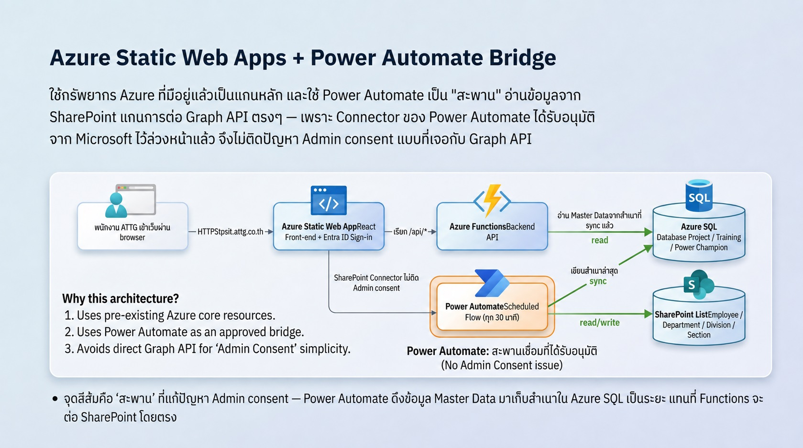
images/architecture-diagram.jpgระบบใช้ Power Automate เป็น "สะพาน" อ่านข้อมูลจาก SharePoint แทนการต่อ Microsoft Graph API ตรงๆ เพราะ Connector ของ Power Automate ได้รับอนุมัติจาก Microsoft ไว้ล่วงหน้าแล้ว จึงไม่ติดปัญหา Admin Consent แบบที่เจอกับ Graph API
ลำดับการไหลของข้อมูล
- พนักงาน ATTG เข้าเว็บผ่าน browser ที่
https://tpsit.attg.co.th - Azure Static Web App (React front-end + Entra ID Sign-in) เรียก
/api/* - Azure Functions (Backend API) อ่าน Master Data จาก Azure SQL ที่ sync ไว้แล้ว และอ่าน/เขียนข้อมูล Project / Training / Power Champion โดยตรง
- Power Automate Scheduled Flow (ทำงานทุก 30 นาที) ดึงข้อมูลจาก SharePoint List (Employee / Department / Division / Section) มาเขียนสำเนาล่าสุดลง Azure SQL — Functions ไม่เคยต่อ SharePoint โดยตรง
- ใช้ทรัพยากร Azure ที่มีอยู่แล้วเป็นแกนหลัก ไม่ต้องสร้างใหม่
- ใช้ Power Automate เป็นสะพานที่ได้รับอนุมัติแล้ว (Approved Bridge)
- หลีกเลี่ยงการต่อ Graph API ตรงๆ ซึ่งต้องขอ Admin Consent เพิ่ม — Power Automate connector ไม่ติดปัญหานี้